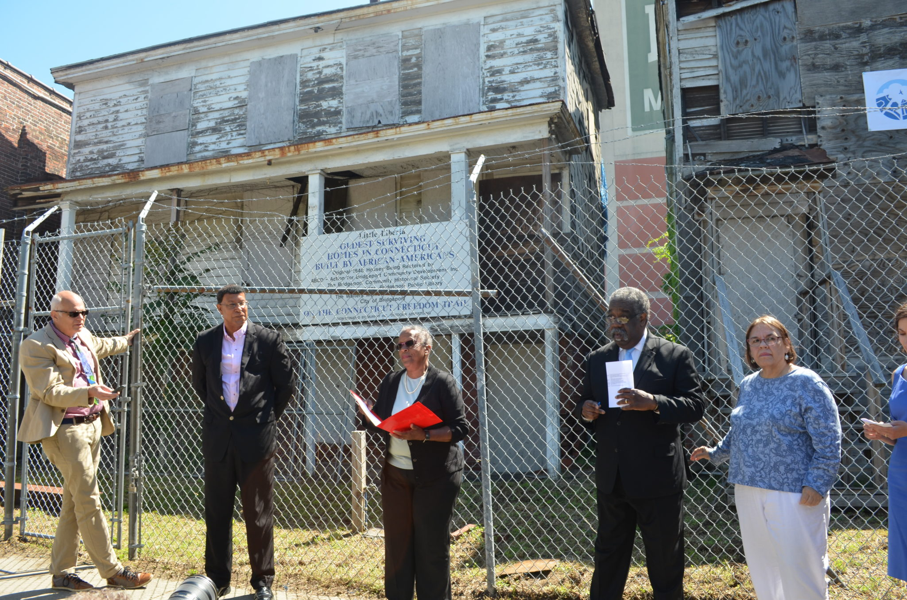

History
The Green Team
Back in 2007, The Green Team was the first program created by Greater Bridgeport Community Enterprises, Inc. As an outgrowth of Bridgeport’s Community Action Program, Action for Bridgeport Community Development (ABCD) , one of the largest social service agencies in our state managing an extensive Weatherization program throughout Fairfield County, The Green Team was designed to train disadvantaged area residents in Weatherization, Lead and Asbestos Abatement trades and to form graduates into teams that would fulfill contracts for residential weatherization and lead/asbestos abatement through the City of Bridgeport, ABCD and regional authorities. This was the time of the American Recovery and Reinvestment Act (ARRA) that was to pull the nation out of the Great Recession. Thanks to a major US Housing and Urban Development grant, submitted and won by ABCD, GBCE was created and The Green Team launched.
From 2007 through 2014, the Green Team trained and placed more than 250 low-income, disadvantaged residents. With graduates of the program, we completed numerous contracts for ABCD Weatherization Department, for the City of Bridgeport and the Bridgeport Housing Authority, as well as several contracts for neighboring municipalities and private entities. These were often for weatherization of municipal buildings or housing complexes.
Known for taking on creative projects, The Green Team conducted trail-blazing programs for the City of Bridgeport and the Mary & Eliza Freeman Center for History and Community. As an example of innovative and productive programming, in 2010 The Green Team refurbished a home re-possed by the City of Bridgeport. The class of 12 students learned carpentry, asbestos and lead abatement while rebuilding the porch and repainting the interior. They also were led in landscaping through a class that cleared the garden and reinstated fencing. This project was made possible by the collaboration of The WorkPlace, Inc. that funded the training, and the City of bridgeport that provided the house. In 2012, the Green Team conducted a class and contract for the Eliza and Mary Freemen Center for History and Community. The class was taught deconstruction skills and techniques while dismantling non-historic portions of the 1848 National Register homes of Mary and Eliza Freeman. This work permitted the 2 structures to survive several years while plans were developed for the full renovation of both homes and students learned about an important chapter in the history of Little Liberia, home to free people of color in the South End of Bridgeport.
Next Chapter Books
For a little more than two years GBCE operated a book recycling operation, Next Chapter Books, that employed 5 people. Like all of its social ventures, this one aimed to impact the green profile of our community, increase good employment opportunities and put money back into our neighborhood by economically supporting local families.
In partnership with more than 70 libraries in Connecticut and Westchester County New York, we collected and processed for reuse and recycling old books that were to be discarded and would likely have wound up in landfills. Books came pouring in through many other sources such as schools, colleges, and universities. Also, nearby residents dropped off boxes of books at our warehouse and we gathered many thousands through book collection bins strategically placed throughout Southwestern CT. In cooperation with some companies, such as Citizens Bank, employees donated old books at work in book bins that we provided. Even municipal transfer stations set aside discarded books for us.
With our truck and staff we collected, sorted, sold and recycled books to support employment. Over the years 2014 and 2015, we sold more than 28,000 books for revenues of $300K through Amazon Sellers program, and with our Thrift Books partners another 82,000 “penny books” for $53,000. We also saved from landfills 500 tons of books that were recycled into pulp and came back to the public as paper products of all sorts.
Because our warehouse space is very limited, we had to suspend book recycling operations when the Mattress Recycling Law went into effect last year. All space is currently dedicated to deconstructing and recycling the component parts of mattresses and box springs. We are actively looking for partners and space where this successful social venture can be continued. Please contact us if you have any ideas or interest in providing a Next Chapter for Books!